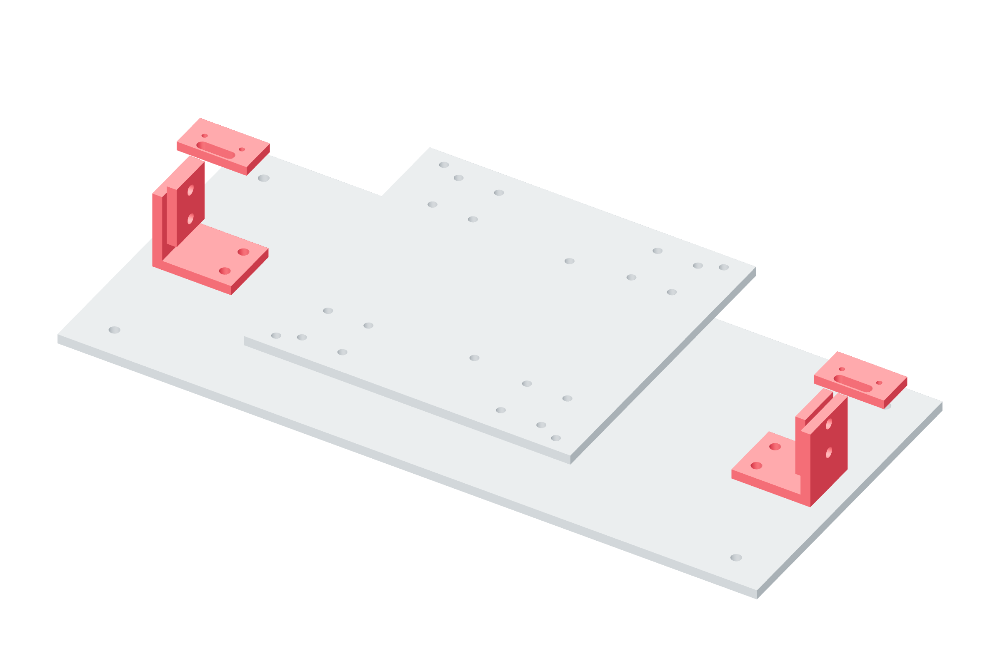

Travel / X Y Z85 / 179
Install the linear stop pairs
The switch opens before the metal stop receives the carriage. Soft travel is ±85 mm; switches are near ±89 mm and metal stops are at ±94 mm.
AddPer axis: 2 metal stops / backed angles · 8 M6 × 25 face/foot bolts · washers / locking nuts · 2 NC switches
Tools / setupRule · caliper · continuity meter · hand screw rotation

- Install both metal angle-backed stops; the carriage must strike metal at ±94 mm.
- Fit each switch so it opens at ±89 mm and still has overtravel before its metal stop.
- With belt uncoupled and load supported, approach each end slowly by hand while metering COM/NC.
- Mark the physical central datum halfway between the established end datums; record the actual switch positions.
Ready when
Both switches open before either metal contact, and every block remains on its full rail support through the metal-stop position. A switch used as the load stop or a block leaving the rail is a failed travel layout. Relocate the backed stop/switch and repeat the sweep.